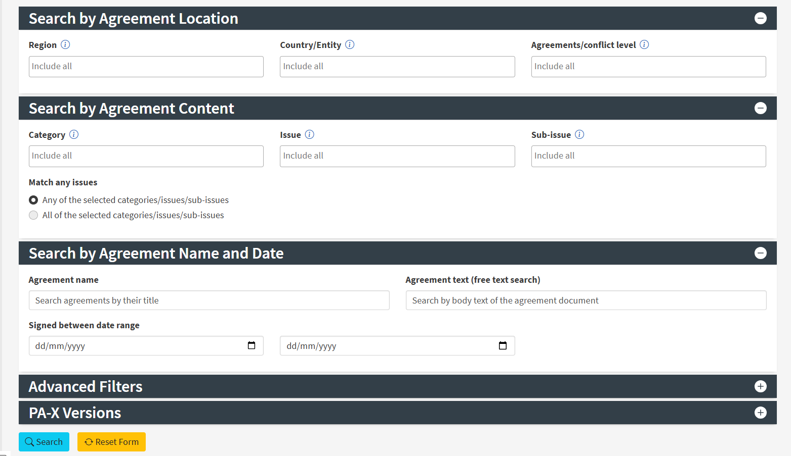

For researchers, students, practitioners, country teams and people encountering PA-X for the first time.
Three connected layers of evidence
Agreement textWhat was agreed?
↕
Coded metadataWhere, when, who, which process?
Coded provisionsWhat issues does it address?
↓
Your research questionFind · Read · Compare · Interpret
The short introduction
Peace agreement data for research and policy
PA-X brings peace agreement texts together with information about their context and expert coding of their content. It supports both close reading and investigation of patterns across agreements and processes.
Developed by researchers at the University of Edinburgh through PeaceRep, it helps mediators, civic actors, policy teams and researchers explore how agreements address conflict. [1]
2,257agreements in main PA-X
1990–2025agreement coverage
Read + analysedocuments, metadata and provisions
v10 (2026)
01 / Get to know the data
The agreement record
PA-X uses the agreement as its basic unit. Its text, context and provisions give you different ways to find and understand it.
A real agreement / PA-X 152
Acuerdo Final entre el Gobierno Nacional y el Partido Revolucionario de los Trabajadores, don Gabriel, Ovejas, Sucre
Includes: structured actor information and signing relationships linked to PA-X agreements.
Use it to: work with structured signatory records across agreements, where the original documents may use different names, titles or references for an actor.
Remember: signatories do not capture everyone who negotiated, influenced or participated in a process.
On PA-X Search, use Agreement text (free text search) to search the body of agreement documents. Combine this with location, date or topic filters to focus your selection.
For text analysis in your own tools, download the PA-X Corpus and connect it to the quantitative data using AgtId. The dedicated Excel Corpus file splits long documents across columns.
Explore connections between agreements and their party and third-party signatories. Select an actor to investigate the agreements they signed, or an agreement to see its signatories. Tracker also brings agreement information alongside contextual indicators.
Match UcdpCon to the conflict identifier (conflict_id), and UcdpAgr to the peace agreement identifier (paid in the UCDP Peace Agreement Dataset v19.1). Choose the appropriate UCDP dataset and version.
Match the recorded PAM agreement identifier to the agreement ID in your chosen PAM export. Confirm the agreement name and date; PAM focuses on comprehensive agreements.
Match the three-letter country designation to an ISO alpha-3 column, such as COL for Colombia. Include the relevant year when joining country-year data.
Match the numeric Gleditsch-Ward country code, such as 100 for Colombia. Check historical state coverage and the year of your observations.
Prepare the merge: align identifier formats (for example, 100.0 and 100), retain missing values as missing, and check repeated IDs before joining. A match can produce several rows per agreement, especially with country-year or event data. Choose the time period and unit of analysis explicitly. The location slots indicate the recorded locations; assignment to slot 1 or 2 does not rank their importance.
PA-X combines documentary research, substantive expertise and quality review. Click + on each step to see what the work involves, or open the full provenance visualisation.
Which agreements are included?
PA-X’s core definition concerns formal, publicly available documents agreed by some or all conflict protagonists and aimed at addressing conflict. The collection begins in 1990. Expert judgement is needed when applying these conditions. A variety of documents are archived and excluded from the main PA-X release.
The documented time rule covers agreements signed after 1 January 1990 addressing an ongoing conflict, or one that ended within the preceding 50 years. This includes some settlements reached long after fighting ended. Read the methodology explanation (p.26) ?
The core conflict threshold is more than 25 conflict-related deaths in a year. PA-X also includes some local agreements outside that threshold. Agreement status can cover clearly agreed documents without conventional signatures, so a handwritten signature is not a universal entry requirement.
Peace agreement collection is an ongoing process that compiles documents from a wide range of sources, including official websites, NGO reports, books, news monitoring, social media, word of mouth and correspondence. Researchers draw on expertise in law and international relations.
Recurring challenges include missed and non-written agreements, source bias, verifying information and deciding whether an agreement should be included.
Peace agreements are often written in local languages. In these cases, domain and language experts translate the documents into English, drawing on interpretation, translation, legal terminology and country-specific context.
Translation involves careful attention to meaning, including the risk of translation errors and misinterpretation.
3 Transcribe
Agreements come in various formats, including PDFs, Word documents and images. Their text often needs to be transcribed into plain text using optical character recognition (OCR), hand-typing, copy-and-paste or automated extraction.
Transcription work addresses typographical errors, duplicate text, tables, handwriting and the removal of personal information.
4 Code
The plain text of the agreement is tagged according to the topics it covers, including socio-economic development, political or military power sharing, and gender. This work draws on expertise in political science, country context, conflict resolution, law and international relations.
Coding questions include missed passages, missing data, interpretation of the coding manual and differences between coders.
5 Quality control
The tagged text goes through quality control to ensure that coding is consistent with the definitions of the topics. Reviewers with expertise in PA-X coding and context resolve coding questions and review decisions made during coding.
This includes checking untagged passages, missing data, coding inconsistencies and adherence to the coding manual.
6 Publish
Once the data is approved and quality checks are resolved, it is published in the PA-X database. Preparing a release brings together software engineering, database management and web development, using manual entry and automated processing.
The published data supports further research, specialist coding, visualisations and other PeaceTech resources.
Topic coding describes what the agreement addresses. Select a topic to explore its meaning.Search and browse topics →
Stage in focus
Peace processes are messy
Processes go back and forth between stages. In the visualisation below, reveal the recorded trajectories and follow a peace process: talks, ceasefires, substantive agreements and implementation arrangements can recur as negotiations develop.
An implementation agreement is not proof that an agreement was implemented. It may set out arrangements for carrying out earlier commitments.
Start with the smooth blue line showing an idealised sequence. Select CLICK TO START inside the chart to reveal the recorded, back-and-forth trajectories. Then explore a process and its agreements; Reset returns to the idealised view.
If the embedded chart does not appear, open the full explorer in a new tab below.
Under agreement content, choose Governance, then Political parties reform and the transition sub-issue.
Open a result and read its coded passages alongside the agreement document.
Use Export agreement coding (PDF) to keep an evidence note; download the selected data if you want to analyse it further.
In the main CSV
Select the relevant Con designation and PolParTrans = 1. Keep AgtId to reconnect your rows to the website.
A real example · Agreement 152
Colombia: Government and PRT agreement, 25 January 1991
The record links political-party transition coding to provisions facilitating the PRT’s legal establishment as a political party. The local main CSV records PolParTrans = 1.
This record and its coded data provide evidence of what is written in the agreement. They do not record whether its commitments were implemented.
Choose Country/Entity or a Peace process. Open the timeline to see the agreements over time, with the results beneath it. Use the result-order controls to inspect the list, open individual agreements, or export data for further analysis.
In the main CSV
Select PP for one process and confirm its PPName. Parse and sort Dat; retain AgtId, Stage and StageSub. A country can contain multiple processes.
Interpreting an agreement chronology
A timeline describes recorded agreement-making. Gaps do not show that negotiations stopped, and stage changes do not measure success or failure.
Use the event-type filter to focus the timeline, then open an event for its description and source links. This adds institutional context to the agreement chronology. Check each source's coverage; events occurring close together do not establish a causal relationship.
The Sudan Tracker profile also links to a process overview, implementation data, an agreement-actor network and PeaceRep research.
C
Tracking provision coverage over time
What share of non-local agreements each year contains substantive provisions on refugees or displaced persons?
Select all agreement/conflict levels except Intrastate/local conflict and export the results. Then add Refugees/displaced persons: Substantive and export this selection too. Group each export by agreement year in a spreadsheet or analysis tool. For each year, divide the number with substantive provisions by the total number of non-local agreements. The CSV workflow below shows how to calculate this from the main dataset.
In the main CSV
Extract the year from Dat and keep one row per AgtId.
Exclude Agtp = IntraLocal. Group the remaining agreements by year.
For each year, count all remaining agreements and those with GRefSubs = 1. Divide the second count by the first and multiply by 100.
In a spreadsheet, add a year column and a 1/0 column for GRefSubs = 1. After excluding local rows, a pivot table with year as rows and the average of that 1/0 column, formatted as a percentage, gives the annual share. Include a count of AgtId alongside it.
Calculated from the main PA-X v10 CSV. Hatched bars on top show excluded local agreements. Red shows non-local agreements with substantive provisions; grey shows non-local agreements without substantive provisions. The percentage uses only red plus grey. Each agreement is counted once within its year.
Selection matters. This example uses GRefSubs = 1 for substantive provisions. GRef > 0 would answer the broader question of any coded reference, including rhetorical references. Always retain the annual counts alongside the percentages.
For 2025, 9 of 53 non-local agreements (17.0%) contain these substantive provisions. The 9 local agreements shown with hatching are excluded from that calculation.
Choose real PA-X options. Open the resulting search in a new tab, or use the CSV instructions to select the equivalent information in your data file.
Where your choices appear on PA-X Search
The public search form starts with agreement location, then agreement content and name or date. For an issue search, choose a Country/Entity if needed, then use Category, Issue or Sub-issue to describe the provision you want to find. Advanced Filters are available below these sections.

The PA-X Search page groups filters by agreement location, content, and name and date. Open Advanced Filters for further restrictions. Screenshot supplied during review; the query builder below uses a simplified selection of these controls.
The builder uses the main PA-X search. For specialist Gender or Local coding, use the links on those resource cards. Country and process restrictions combine; incompatible choices may return no agreements.
06 / Interpret the data
Interpreting PA-X data
Agreement text→CommitmentOutcome needs separate evidence
Agreement commitments and implementation
Text can show what parties agreed. It cannot by itself show implementation, compliance or a lasting change on the ground.
PlaceTimeAgreement type
Scope and selection
Different periods, processes and agreement types create different comparisons. Explain who or what is included and excluded.
Code = 0→No specific mention
Interpreting the absence of a code
“No specific mention” means the text was not coded as addressing that issue. It does not show a deliberate decision to exclude it, or that it was unimportant in negotiations. Missing information is a separate matter.
ABObserved together
Association and causal inference
Topics appearing together do not show that one caused the other. Shared signatories do not establish an alliance, influence or effectiveness. Topics in one agreement may occur in different passages.
For policy and country teams
Preparing a country or policy briefing
Orient yourself. Open a country timeline, identify the relevant processes and read a few agreements.
Focus on your question. Find the relevant topic definition, then search for its provisions. Include the context needed to explain the selection.
Keep the evidence. Save agreement coding PDFs or a CSV, and note which passages support your briefing.
Add research and expertise. Read the relevant PeaceRep findings and consult country or thematic researchers about context, implementation and interpretation.
Write a bounded conclusion. Say what the agreements provide for, what your selection covers, and which questions remain unanswered.
Briefing structure
The policy question · the agreements examined · two or three relevant commitments with links · differences or exceptions · what the evidence cannot establish · questions for further research or discussion.
The guide supports briefings and shared learning. It does not replace conversation between researchers, policy teams, civic actors and practitioners.
Cite and explore the sources
Remember to cite the data
Citing PA-X gives credit to the research and expertise behind the data, identifies the resources you have used, and supports transparent, reproducible work. Follow the citation guidance and terms of use provided with the dataset or resource you use.
Copy the PA-X citation
Bell, C., & Badanjak, S. (2019). Introducing PA-X: A new peace agreement database and dataset. Journal of Peace Research, 56(3), 452–466. https://www.peaceagreements.org/
For analysis, also identify the dataset file you used, cite the appropriate codebook, and link the agreements or passages behind your findings. Specialist datasets provide their own citation instructions.
Sources used in this guide
The numbered links support explanations and examples in this guide. They are source references, not seven citations to copy into your own work.
PA-X Search: public labels, filter options and agreement records.
PA-X visualisations and PeaceRep tools: further ways to explore the data. Back and Forth design credits: Tobias Kauer, Tomas Vancisin and Niamh Henry, PeaceRep Vis Team, University of Edinburgh.